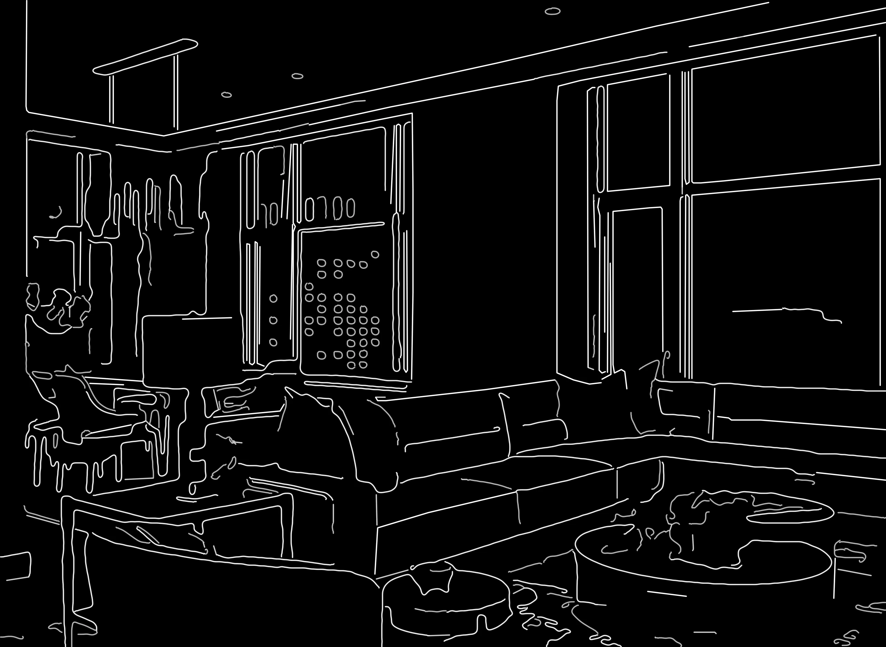
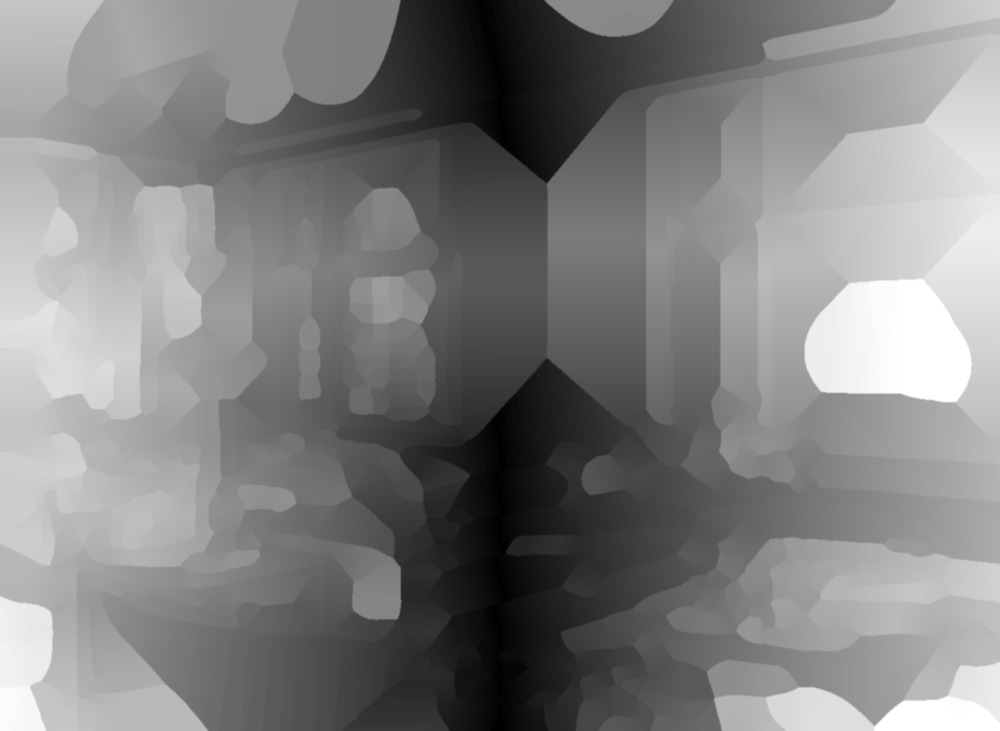
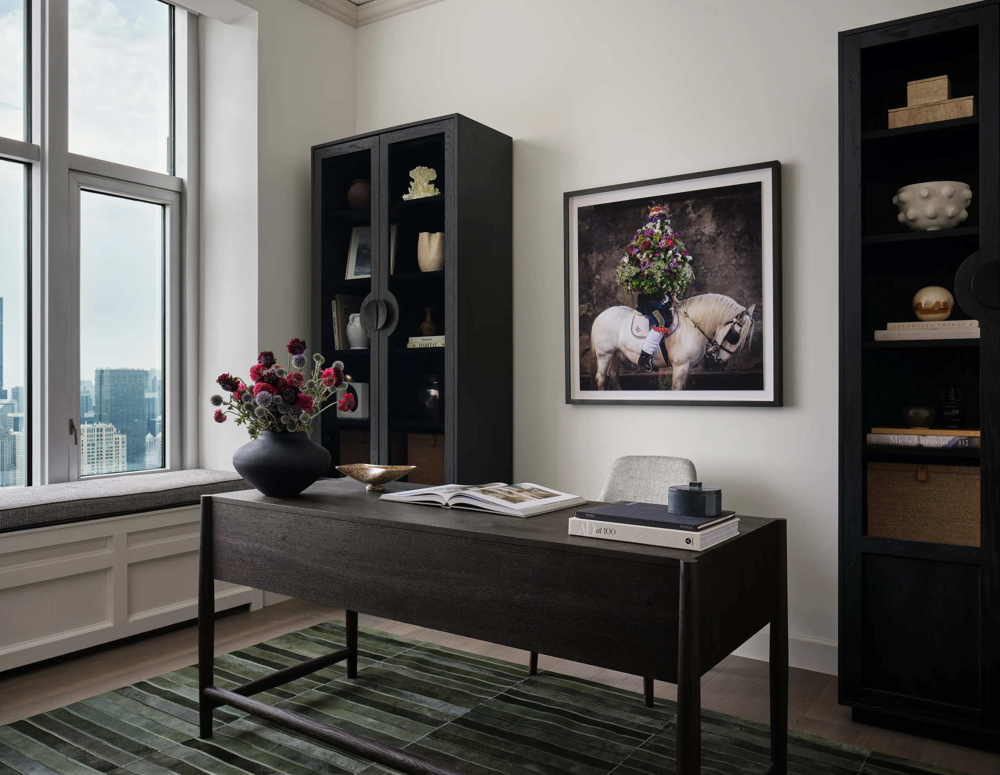
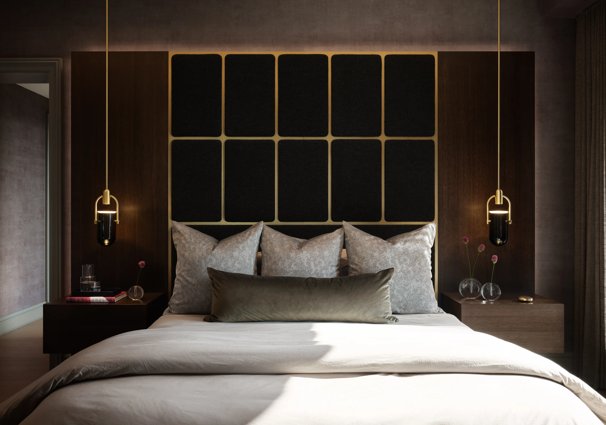

01
Understand
Your lifestyle, aesthetic point of view, collections, existing pieces, and priorities



CI Curated
CI Curated
Architecture and construction establish the home.
Furnishings, lighting, objects, art, materials,
and styling give it depth, personality, and life
CI brings those decisions together into one considered whole

Is CI Curated Right for You?
CI Curated may be the right fit if:
What’s Included
Depending on project scope:
ArchitectureInterior architectureInterior designConstructionProject managementFurnishingsCustom furnitureDecorative lightingRugs and textilesWindow treatmentsArt advisoryArtwork placement coordinationAccessories and objectsProcurementDelivery coordinationInstallationStyling

What You Receive
Construction can be complete while a home still feels unfinished
CI Curated considers what happens after the walls, millwork, lighting, stone, and flooring are installed
Scale
Comfort
Furniture
Art
Texture
Objects
What you see when you enter
What you sit in every evening
What deserves a place of prominence
The goal is not
to fill rooms.
It is to compose
a residence
Our Responsibility
Because the same team understands the architecture,
We can curate what comes next with greater intelligence
Furniture
Is considered against circulation and scale
Art
Is considered against architecture and light
Lighting
Is considered against material and mood
Procurement
Is considered against project timing

Each Layer
Belongs to the
Same Story
The CI Curated Process
01
Your lifestyle, aesthetic point of view, collections, existing pieces, and priorities
02
Architecture and interiors establish the foundation
03
CI executes the permanent environment
04
Furniture, art, textiles, lighting, and objects are selected or created specifically for the residence
05
Orders, vendors, lead times, deliveries, and logistics are coordinated
06
The layers come together in the home
07
Placement, styling, and final details complete the composition

Why Choose CI Curated?
A beautifully renovated residence can still feel unresolved when architecture and furnishings are treated as two separate projects
CI Curated connects them
There is continuity
between the material palette and the furniture
Between
art and architecture
Between
proportion and placement
Between
what is built and how it is ultimately lived in
The result feels
collected, personal,
and complete,
not decorated
after the fact

Let’s create a home that feels complete
because every part belongs